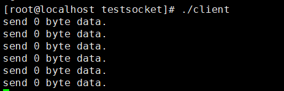
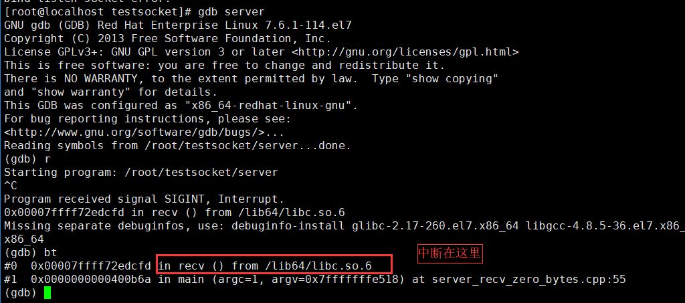

非阻塞模式下 send 和 recv 函数的返回值
我们来总结一下 send 和 recv 函数的各种返回值意义：
| 返回值 n | 返回值含义 |
|---|---|
| 大于 0 | 成功发送 n 个字节 |
| 0 | 对端关闭连接 |
| 小于 0（ -1） | 出错或者被信号中断或者对端 TCP 窗口太小数据发不出去（send）或者当前网卡缓冲区已无数据可收（recv） |
我们来逐一介绍下这三种情况：
返回值大于 0
对于 send 和 recv 函数返回值大于 0，表示发送或接收多少字节，需要注意的是，在这种情形下，我们一定要判断下 send 函数的返回值是不是我们期望发送的缓冲区长度，而不是简单判断其返回值大于 0。举个例子：
1int n = send(socket, buf, buf_length, 0)； 2if (n > 0) 3{ 4 printf("send data successfully\n"); 5}很多新手会写出上述代码，虽然返回值 n 大于 0，但是实际情形下，由于对端的 TCP 窗口可能因为缺少一部分字节就满了，所以返回值 n 的值可能在 (0, buf_length] 之间，当 0 < n < buf_length 时，虽然此时 send 函数是调用成功了，但是业务上并不算正确，因为有部分数据并没发出去。你可能在一次测试中测不出 n 不等于 buf_length 的情况，但是不代表实际中不存在。所以，建议要么认为返回值 n 等于 buf_length 才认为正确，要么在一个循环中调用 send 函数，如果数据一次性发不完，记录偏移量，下一次从偏移量处接着发，直到全部发送完为止。
1 //推荐的方式一
2 int n = send(socket, buf, buf_length, 0)；
3 if (n == buf_length)
4 {
5 printf("send data successfully\n");
6 }
1//推荐的方式二：在一个循环里面根据偏移量发送数据
2bool SendData(const char* buf , int buf_length)
3{
4 //已发送的字节数目
5 int sent_bytes = 0;
6 int ret = 0;
7 while (true)
8 {
9 ret = send(m_hSocket, buf + sent_bytes, buf_length - sent_bytes, 0);
10 if (nRet == -1)
11 {
12 if (errno == EWOULDBLOCK)
13 {
14 //严谨的做法，这里如果发不出去，应该缓存尚未发出去的数据，后面介绍
15 break;
16 }
17 else if (errno == EINTR)
18 continue;
19 else
20 return false;
21 }
22 else if (nRet == 0)
23 {
24 return false;
25 }
26
27 sent_bytes += ret;
28 if (sent_bytes == buf_length)
29 break;
30
31 //稍稍降低 CPU 的使用率
32 usleep(1);
33 }
34
35 return true;
36}
返回值等于 0
通常情况下，如果 send 或者 recv 函数返回 0，我们就认为对端关闭了连接，我们这端也关闭连接即可，这是实际开发时最常见的处理逻辑。
但是，现在还有一种情形就是，假设调用 send 函数传递的数据长度就是 0 呢？send 函数会是什么行为？对端会 recv 到一个 0 字节的数据吗？需要强调的是，在实际开发中，你不应该让你的程序有任何机会去 send 0 字节的数据，这是一种不好的做法。 这里仅仅用于实验性讨论，我们来通过一个例子，来看下 send 一个长度为 0 的数据，send 函数的返回值是什么？对端会 recv 到 0 字节的数据吗？
server 端代码：
1 /**
2 * 验证recv函数接受0字节的行为，server端，server_recv_zero_bytes.cpp
3 * zhangyl 2018.12.17
4 */
5 #include <sys/types.h>
6 #include <sys/socket.h>
7 #include <arpa/inet.h>
8 #include <unistd.h>
9 #include <iostream>
10 #include <string.h>
11 #include <vector>
12
13 int main(int argc, char* argv[])
14 {
15 //1.创建一个侦听socket
16 int listenfd = socket(AF_INET, SOCK_STREAM, 0);
17 if (listenfd == -1)
18 {
19 std::cout << "create listen socket error." << std::endl;
20 return -1;
21 }
22
23 //2.初始化服务器地址
24 struct sockaddr_in bindaddr;
25 bindaddr.sin_family = AF_INET;
26 bindaddr.sin_addr.s_addr = htonl(INADDR_ANY);
27 bindaddr.sin_port = htons(3000);
28 if (bind(listenfd, (struct sockaddr *)&bindaddr, sizeof(bindaddr)) == -1)
29 {
30 std::cout << "bind listen socket error." << std::endl;
31 close(listenfd);
32 return -1;
33 }
34
35 //3.启动侦听
36 if (listen(listenfd, SOMAXCONN) == -1)
37 {
38 std::cout << "listen error." << std::endl;
39 close(listenfd);
40 return -1;
41 }
42
43 int clientfd;
44
45 struct sockaddr_in clientaddr;
46 socklen_t clientaddrlen = sizeof(clientaddr);
47 //4. 接受客户端连接
48 clientfd = accept(listenfd, (struct sockaddr *)&clientaddr, &clientaddrlen);
49 if (clientfd != -1)
50 {
51 while (true)
52 {
53 char recvBuf[32] = {0};
54 //5. 从客户端接受数据,客户端没有数据来的时候会在recv函数处阻塞
55 int ret = recv(clientfd, recvBuf, 32, 0);
56 if (ret > 0)
57 {
58 std::cout << "recv data from client, data: " << recvBuf << std::endl;
59 }
60 else if (ret == 0)
61 {
62 std::cout << "recv 0 byte data." << std::endl;
63 continue;
64 }
65 else
66 {
67 //出错
68 std::cout << "recv data error." << std::endl;
69 break;
70 }
71 }
72 }
73
74
75 //关闭客户端socket
76 close(clientfd);
77 //7.关闭侦听socket
78 close(listenfd);
79
80 return 0;
81 }
上述代码侦听端口号是 3000，代码 55 行调用了 recv 函数，如果客户端一直没有数据，程序会阻塞在这里。
client 端代码：
1/**
2 * 验证非阻塞模式下send函数发送0字节的行为，client端，nonblocking_client_send_zero_bytes.cpp
3 * zhangyl 2018.12.17
4 */
5#include <sys/types.h>
6#include <sys/socket.h>
7#include <arpa/inet.h>
8#include <unistd.h>
9#include <iostream>
10#include <string.h>
11#include <stdio.h>
12#include <fcntl.h>
13#include <errno.h>
14
15#define SERVER_ADDRESS "127.0.0.1"
16#define SERVER_PORT 3000
17#define SEND_DATA ""
18
19int main(int argc, char* argv[])
20{
21 //1.创建一个socket
22 int clientfd = socket(AF_INET, SOCK_STREAM, 0);
23 if (clientfd == -1)
24 {
25 std::cout << "create client socket error." << std::endl;
26 return -1;
27 }
28
29 //2.连接服务器
30 struct sockaddr_in serveraddr;
31 serveraddr.sin_family = AF_INET;
32 serveraddr.sin_addr.s_addr = inet_addr(SERVER_ADDRESS);
33 serveraddr.sin_port = htons(SERVER_PORT);
34 if (connect(clientfd, (struct sockaddr *)&serveraddr, sizeof(serveraddr)) == -1)
35 {
36 std::cout << "connect socket error." << std::endl;
37 close(clientfd);
38 return -1;
39 }
40
41 //连接成功以后，我们再将 clientfd 设置成非阻塞模式，
42 //不能在创建时就设置，这样会影响到 connect 函数的行为
43 int oldSocketFlag = fcntl(clientfd, F_GETFL, 0);
44 int newSocketFlag = oldSocketFlag | O_NONBLOCK;
45 if (fcntl(clientfd, F_SETFL, newSocketFlag) == -1)
46 {
47 close(clientfd);
48 std::cout << "set socket to nonblock error." << std::endl;
49 return -1;
50 }
51
52 //3. 不断向服务器发送数据，或者出错退出
53 int count = 0;
54 while (true)
55 {
56 //发送 0 字节的数据
57 int ret = send(clientfd, SEND_DATA, 0, 0);
58 if (ret == -1)
59 {
60 //非阻塞模式下send函数由于TCP窗口太小发不出去数据，错误码是EWOULDBLOCK
61 if (errno == EWOULDBLOCK)
62 {
63 std::cout << "send data error as TCP Window size is too small." << std::endl;
64 continue;
65 }
66 else if (errno == EINTR)
67 {
68 //如果被信号中断，我们继续重试
69 std::cout << "sending data interrupted by signal." << std::endl;
70 continue;
71 }
72 else
73 {
74 std::cout << "send data error." << std::endl;
75 break;
76 }
77 }
78 else if (ret == 0)
79 {
80 //对端关闭了连接，我们也关闭
81 std::cout << "send 0 byte data." << std::endl;
82 }
83 else
84 {
85 count ++;
86 std::cout << "send data successfully, count = " << count << std::endl;
87 }
88
89 //每三秒发一次
90 sleep(3);
91 }
92
93 //5. 关闭socket
94 close(clientfd);
95
96 return 0;
97}
client 端连接服务器成功以后，每隔 3 秒调用 send 一次发送一个 0 字节的数据。除了先启动 server 以外，我们使用 tcpdump 抓一下经过端口 3000 上的数据包，使用如下命令：
1tcpdump -i any 'tcp port 3000'
然后启动 client ，我们看下结果：

客户端确实是每隔 3 秒 send 一次数据。此时我们使用 lsof -i -Pn 命令查看连接状态，也是正常的：

然后，tcpdump 抓包结果输出中，除了连接时的三次握手数据包，再也无其他数据包，也就是说，send 函数发送 0 字节数据，client 的协议栈并不会把这些数据发出去。
1[root@localhost ~]# tcpdump -i any 'tcp port 3000'
2tcpdump: verbose output suppressed, use -v or -vv for full protocol decode
3listening on any, link-type LINUX_SLL (Linux cooked), capture size 262144 bytes
417:37:03.028449 IP localhost.48820 > localhost.hbci: Flags [S], seq 1632283330, win 43690, options [mss 65495,sackOK,TS val 201295556 ecr 0,nop,wscale 7], length 0
517:37:03.028479 IP localhost.hbci > localhost.48820: Flags [S.], seq 3669336158, ack 1632283331, win 43690, options [mss 65495,sackOK,TS val 201295556 ecr 201295556,nop,wscale 7], length 0
617:37:03.028488 IP localhost.48820 > localhost.hbci: Flags [.], ack 1, win 342, options [nop,nop,TS val 201295556 ecr 201295556], length 0
因此，server 端也会一直没有输出，如果你用的是 gdb 启动 server，此时中断下来会发现，server 端由于没有数据会一直阻塞在 recv 函数调用处（55 行）。

上述示例再次验证了，send 一个 0 字节的数据没有任何意思，希望读者在实际开发时，避免写出这样的代码。